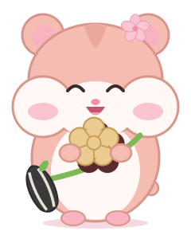

このページは 【発行者名：要確認】 がつくりました。市役所のページではありません。
こがハムくんの クイズ

こがハムくん市長の しごとや、小金井の これからの ことの クイズだよ。ぜんぶで 9もん！
答えは、どこにも送りません。このページを閉じると消えます。
このページは 【発行者名：要確認】 がつくりました。市役所のページではありません。

こがハムくん市長の しごとや、小金井の これからの ことの クイズだよ。ぜんぶで 9もん！
答えは、どこにも送りません。このページを閉じると消えます。